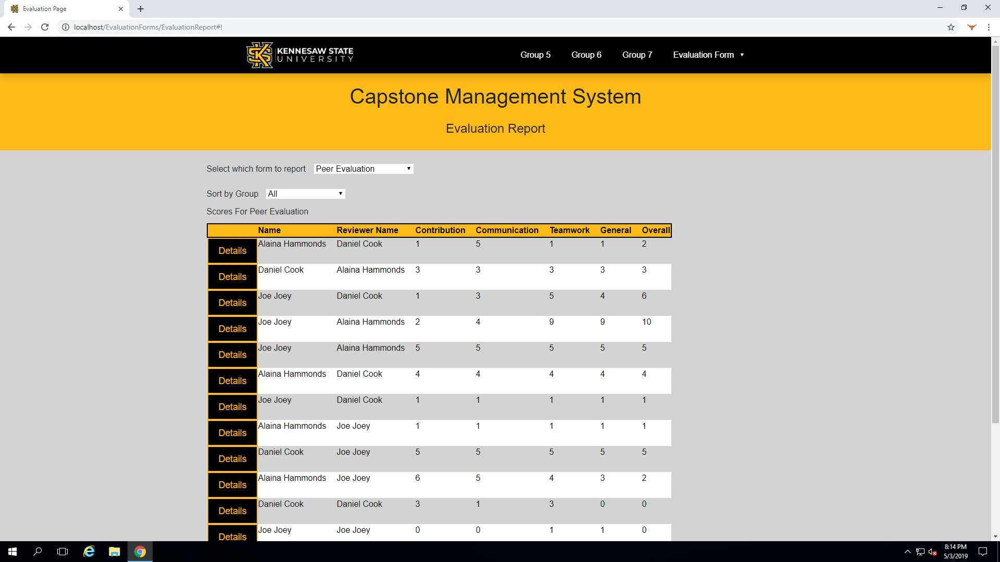
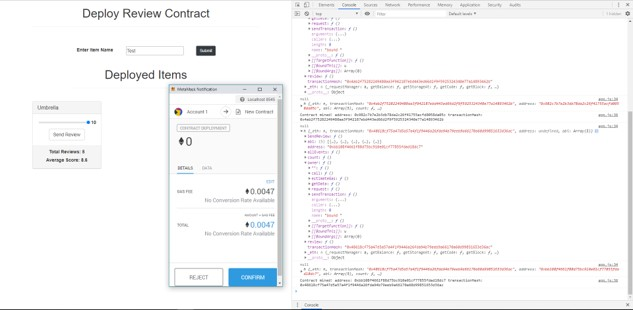

<div>
    <div class="about-page-container">
      <h1>Daniel's Projects</h1>
      <hr>
      <h2>IT Capstone Evaluation Website</h2>
      
      <p class="about-page__text">Daniel worked with a team of three other people to develop a new website that the professors can use to evaluate individuals involved
                                  in the IT Capstone. There are two primary functions of the website, evaluation and reporting. The entirety of the application was developed
                                  solely by Daniel. The teammates assigned provided minimal assistance.

      </p>

      <p class="about-page__text">
        Accomplishments <br />
        - Design SQL database and relations<br />
        - Develop both front end and back end functionality<br />
        - Provide weekly updates to project sponsor<br />
        - Deploy web app on internal server IIS<br />
        - Presented the project for Kennesaw State University's Industry Advisory Board<br />
      </p>

      <hr>

      

      <h2>Blockchain Web Form</h2>
      <p class="about-page__text">Daniel spent time researching and building a blockchain application using Ethereums Smart Contract framework. The app was built to allow
                                  users to submit reviews on any items that involve a user experience. Simply creating a new review contract or using an existing one, a user can
                                  easily add to the blockchain of reviews.

      </p>

      <p class="about-page__text">
        Accomplishments <br />
        - Develop skills coding in Javascript and for blockchain<br />
        - Write smart contracts in the Solidity framework<br />
        - Use Truffle to manage front end web form to deploy and API call contracts<br />
        - Manage virtualized blockchain created through ganache and call user wallets through Web3
      </p>

    </div>
  </div>
